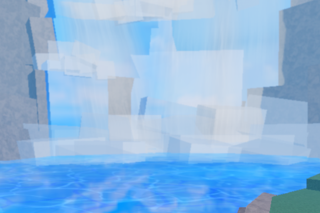

🦉 THE FALLEN CROW
Description
Location
Health
1395 / 1395
Spawn Time
15 Minutes
Drops
Crow's Chakra Fragment (2x–12x)
40%
Crow's Mask
15%
Crow's Ninja Outfit
5%
Crow Katana
1%

*The Fallen Crow is behind the waterfall.*
The Fallen Crow Location
←
The Masked Ninja
Kid Noruto
→
🌙